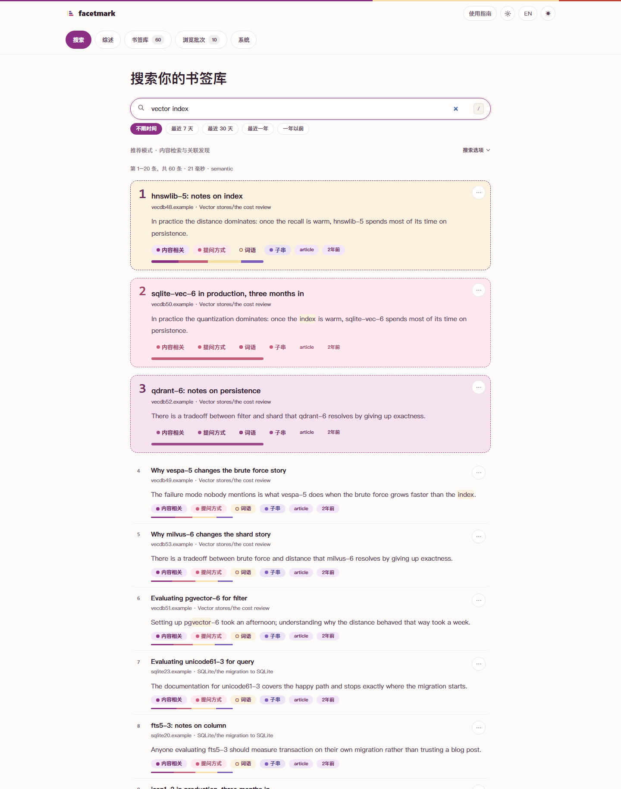
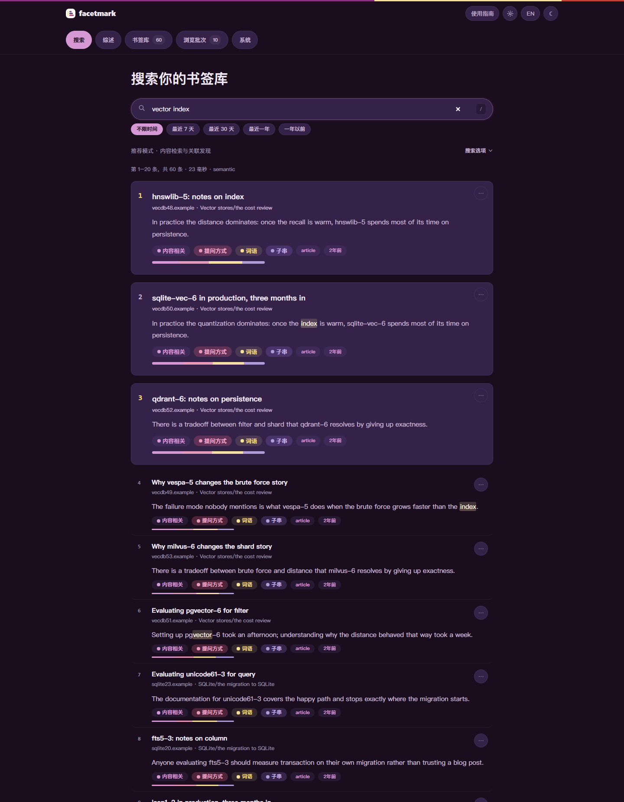

Windows 桌面预览#
测试分支提供 Tauri 2 桌面应用和共享 React 三栏检索工作台。分别配置聊天与向量模型，先测试连接，再确认索引；无需 Key 也能使用关键词检索。原始浏览器书签只读。
从最新成功运行下载 facetmark-windows-x64-preview。安装包含 Python 后端与 WebView2 离线安装器；不带大模型。这是测试安装包，可能出现 SmartScreen 提示，尚未正式发布。
安装与检查#
需要 Python 3.10 或更新版本，支持 Windows、macOS 和 Linux。以下命令在终端运行；macOS / Linux 如果没有 python，请使用 python3。
python --version
python -m pip install facetmark
facetmark --version最后一条命令应输出版本号。如果提示找不到命令，试试 python -m facetmark --version；后续命令也可用这个模块入口。
导入一份书签#
在自己的电脑上，可以自动读取 Chromium 系浏览器的书签。关闭浏览器后运行：
facetmark importFirefox、Safari 或服务器部署：从浏览器导出书签 HTML，再把文件放到运行 facetmark 的机器上。路径包含空格时保留引号。
facetmark import "bookmarks.html"
facetmark stats导入会报告新增、更新与跳过数量，stats 中的书签总数应大于 0。它不会修改浏览器里的原始书签。找不到配置文件时，改用导出的 HTML。
选择搜索方式#
暂时不配置模型也能按词搜索。需要“换个说法也能找到”时，再选择在线向量服务或本地向量模型。
在线模型
在运行命令的工作目录手动创建 .env。下面以 OpenAI 兼容接口为例；模型名称需与你的服务商一致。
FACETMARK_BASE_URL=https://api.openai.com/v1
FACETMARK_API_KEY=sk-your-key
FACETMARK_CHAT_MODEL=gpt-6-luna
FACETMARK_EMBED_MODEL=text-embedding-3-small
FACETMARK_EMBED_DIM=1536对话与向量是两种能力，支持对话不代表支持向量。在线模型会收到相关文本和查询。请先用“设置 → 测试连接”分别验证，再处理完整书签库。
本地向量模型
python -m pip install "facetmark[local]"在 .env 中使用以下配置。首次运行需要下载模型文件；准备好本地模型后，向量在运行服务的机器上计算。
FACETMARK_EMBED_BACKEND=local
FACETMARK_LOCAL_EMBED_PATH=BAAI/bge-m3
FACETMARK_EMBED_MODEL=BAAI/bge-m3
FACETMARK_EMBED_DIM=1024建立索引#
facetmark index
facetmark stats索引会依次抓取网页、准备摘要与向量、整理浏览批次和关联。具体阶段取决于模型配置。抓取遵守网站限制，大型书签库可能需要较长时间。
在“书签库”查看正文覆盖和内容向量数量。向量数量不代表所有网页都抓到了正文；只有标题的书签也可能有衍生索引。
只想先验证流程，可运行 facetmark index --no-fetch 跳过网页下载。之后再次运行 facetmark index 补全内容；未变化的阶段会复用。
打开应用并搜索#
facetmark serve保持终端运行，在同一台电脑打开 http://127.0.0.1:8787/app。端口以终端打印的地址为准。先用一个确定出现在书签标题里的词搜索，再尝试内容描述。


服务器访问与管理#
命令必须在存放书签库的服务器上运行。远程电脑里的 127.0.0.1 指向远程电脑自身，并不指向服务器。公共域名上的应用需要配对令牌。
facetmark token在服务器运行上面的命令，把令牌填入自己的应用配对框。它授予书签库访问权限，请勿公开。设置、导入和索引管理还要求本机连接；远程管理推荐使用 SSH 转发。
ssh -N -L 8788:127.0.0.1:8787 your-user@your-server替换用户名与服务器地址，在你的电脑上保持 SSH 命令运行，然后打开 http://127.0.0.1:8788/app。如果仍提示管理不可用，检查服务器是否配置了 FACETMARK_ADMIN_API=false。
理解结果与来源#
结果徽章说明匹配信号；详情中的“可回答的问题”由模型生成，不是搜索历史。生成摘要可能仅依据标题，界面会标明这种情况。
- 默认模式：有向量模型时使用内容向量、图谱扩展与时间衰减。
- 搜索选项：可比较其他检索组合，部分组合会增加模型调用。
- 关联结果：与排名结果分组展示，用于继续浏览相关页面。
- 综述：根据已存摘要或片段生成回答。引用帮助追溯来源，仍需核对原文。
常见问题与恢复#
| 现象 | 下一步 |
|---|---|
| 页面打不开 | 确认 serve 仍在运行。端口被占用时使用 facetmark serve --port 8788，并访问新端口。 |
| 要求令牌 / 401 | 在运行服务的机器上执行 facetmark token，重新配对。 |
| 设置不可用 / 403 | 使用本机地址或上面的 SSH 转发入口；令牌不会解除管理接口的本机限制。 |
| 按词能搜，换说法搜不到 | 检查向量模型连接、维度与内容向量数量，配置正确后重新建索引。 |
| 模型返回 404 / 429 | 404：核对服务商的完整 base URL 和模型名。429：降低并发并按服务商要求重试。 |
facetmark doctor
facetmark stats仍有问题时，记录版本、操作和脱敏后的错误信息。查看完整排错参考。